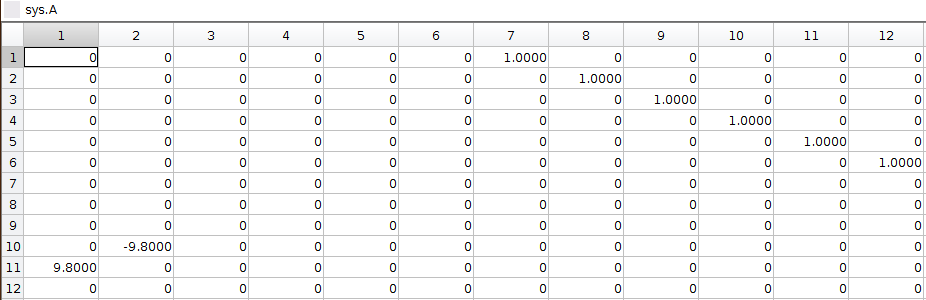

(LQR) 6-Dof Quadcoptor Simulation and Control
Introduction
This project shows how to use LQR linear controller to control a non-linear 6-dof quadcopter.
The purpose of LQR controller is to balance between performance of the drone and the energy it consumes.
LQR controller can realize it in a systematic way. After the user specify the weighting matrix of Performance cost: Q and Control cost: R, LQR will calculate an optimized controller, K.
In this case, increasing the performace cost will lead to a faster responding drone. On the other hand, increasing the control cost will lead to a more energy efficient drone.
* NOTE: The non-linear 6-dof quadcopter used in this project is the same one before.
Demo
By changing the weighting matrix, the drone will respond differently. First one with high Performace Cost. Second one with high Control Cost.
From the 3D animation and 2D data plot, the high performance cost drone moves faster to the origin; it finishes the task at t = 2.5 sec, while using energy = 37. The high control cost drone moves slower to the origin; it finishes the task at t = 5 sec, while using energy = 5.6.

* NOTE: The value of energy is estimated by the linear and angular acceleration.
* NOTE: By simply changing the weighting matrix, the path and the repsonse of the drone change, without any PID tuning.
How to Design a LQR controller for Quadcopter?
- Get the linear quadcopter model by linearing the previous nonlinear 6-dof quadcopter model. The linear model is saved as LinearModel1.mat
- The linear model is defined by A, B, C, and D matrix in state space. The 12 state variables are [roll,pitch,yaw,X,Y,Z,p,q,r,u,v,w]. A, B, C, D matrix are shown below.

- Specifiy the cost matrix in Q and R. Q(1,1) penalizes roll error, Q(2,2) penalizes pitch error, Q(3,3) penalizes yaw error, Q(4,4) penalizes X error, Q(5,5) penalizes Y error, Q(6,6) penalizes Z error. R(1,1) penalizes thrust effort, R(2,2) penalizes Torque-X effort, R(3,3) penalizes Torque-Y effort, R(4,4) penalized Torque-Z effort.
- Calculate and integrate the controller K into the state space system.
- Run the time response (Task A) of the new state space system (with controller K), with a initial perturbation position.
Implementation
Now that we are satisfied with the LQR controller, let's try if we can implement it on the "real situation". Remember, the LQR controller was designed and tested on the "ideal" linear model. Now it's time to apply it to the original nonlinear 6-dof quadcopter model and see how it works.
So we place the controller K, which is calculated by LQR method, in front of the non-linear 6-dof quadcopter model (the 6dof_system block). As usual, we send in the reference XYZ data for the drone to track. The controller K will take the 12 state variables' errors and output 4 control signal in order to drive these error terms to zero. The structure is shown below.
Again, we show the results of two LQR controllers, the first with high performance cost, and the second with high control cost. (* NOTE: The reference path is a square). You see, the high performance cost drone can track the square path better, but consume 38 energy in total. The high control cost drone, however, couldn't perfectly track the square path. Yet it only consumes 12 energy in total.
* NOTE: the y-scale of the Power plots are not the same.
MATLAB Project Download Link
If you want to get this project file, please contact me via my email to get the access: j2855001@gmail.com
This is the project link: Project Link
If you want to support me for doing this work, you can sponsor me by the following paypal link:
sponsor link. Thank you. I really appreciate your support.
Or you can contact me via my WeChat ID: Jordan8871, if you don't have access to
paypal.
Lastly, feel free to contact me if you want to collaborate with me on other interesting projects.